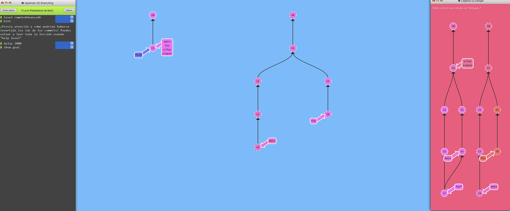
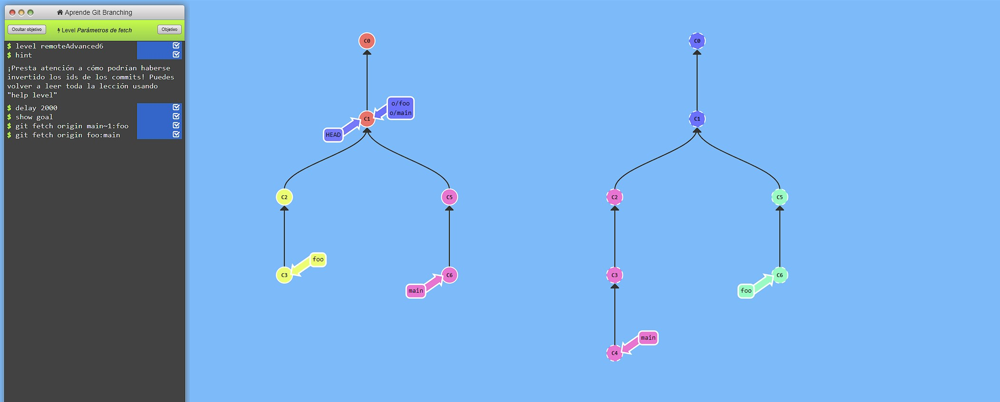
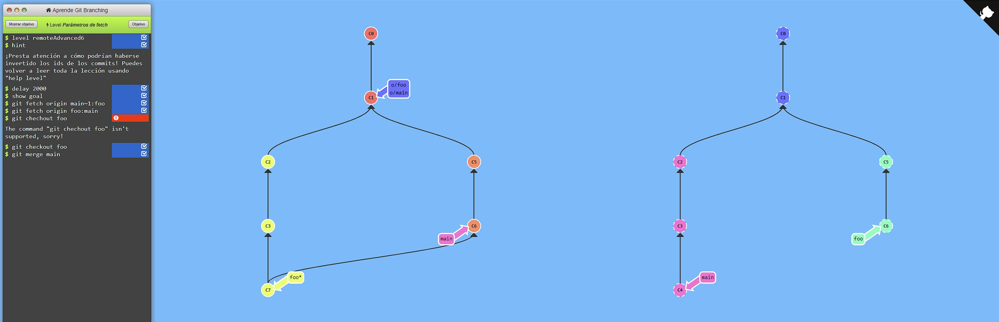
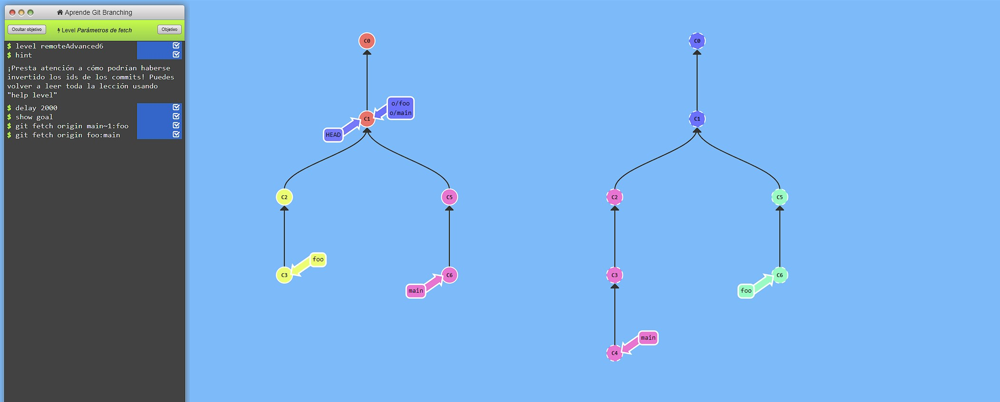
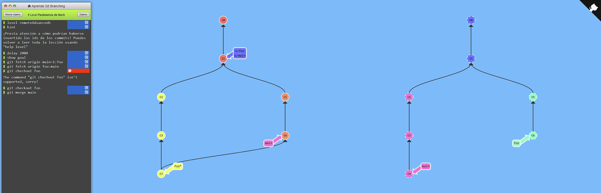

En azul encontramos el enunciado desde el que partimos, y en rosa, el objetivo al que queremos llegar
 En primer lugar introducimos el comando "git fetch origin main~1:foo" En segundo lugar introducimos el comando git fetch origin foo:main

Por ultimos introducimos los comandos git chechout foo y git merge main para finalizar y obtener el siguiente resultado

En segundo lugar introducimos el comando git fetch origin foo:main

Por ultimos introducimos los comandos git chechout foo y git merge main para finalizar y obtener el siguiente resultado
